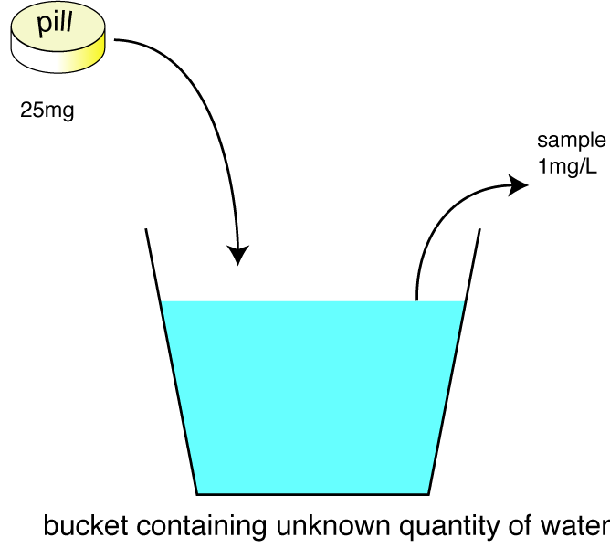

Volume of distribution
The body can be regarded as a number of fluid compartments:
plasma 5% body weight
extracellular fluid 20%
intracellular fluid 40%
CSF etc 2%
fat 20% (variable!!!)
Some idea of where drugs go can be obtained from the apparent volume of distribution (Vd). This is defined as the volume of fluid required to contain the amount of drug in the body at the same concentration as that present in the plasma. Thus if the volume of distribution is the same as the plasma volume (c 0.05 L/kg), the drug is probably staying in the circulation, eg large protein bound molecules like heparin. If it is much greater than the volume of the total body water, or even of the body, the drug is being distributed to a reservoir somewhere, usually fat, eg morphine (c 5 L/kg).
Drugs with a large volume of distribution usually cross the blood brain barrier, which may be desirable, and also the placenta, which is usually not.
The volume of distribution is sometimes used to calculate the dose
required to reach a target plasma concentration.

Volume of distribution: the Vd can be calculated if the amount put in (the dose) and the concentration are known. nb - animals are more complicated than a bucket of water!
| 3 Pharmacokinetics index |
| |
copyright
Massey University
|